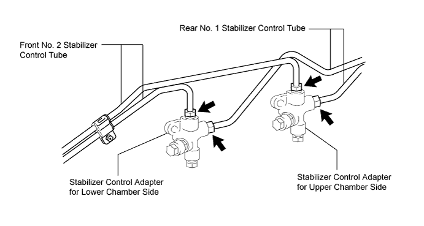
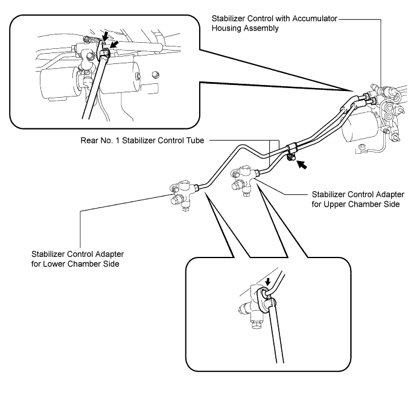
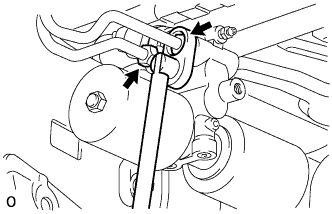
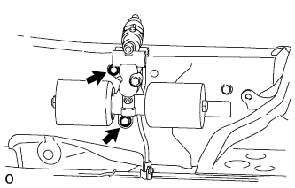
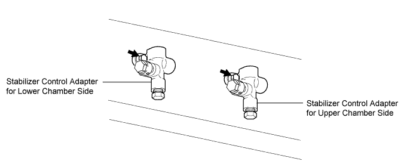

STABILIZER CONTROL VALVE (w/ KDSS) > REMOVAL |
| 1. REMOVE STABILIZER CONTROL VALVE PROTECTOR |
 |
Detach the clamp, and disconnect the connector from the protector.
Remove the 3 bolts and protector.
| 2. OPEN STABILIZER CONTROL WITH ACCUMULATOR HOUSING SHUTTER VALVE |
Using a 5 mm hexagon socket wrench, loosen the lower and upper chamber shutter valves of the stabilizer control with accumulator housing 2.0 to 3.5 turns.

| 3. REMOVE TAILPIPE ASSEMBLY |
for 2UZ-FE:
Remove the tailpipe (Click here).
for 1VD-FTV:
Remove the tailpipe (Click here).
| 4. REMOVE CENTER EXHAUST PIPE ASSEMBLY |
for 2UZ-FE:
Remove the center exhaust pipe (Click here).
for 1VD-FTV:
Remove the center exhaust pipe (Click here).
| 5. DISCHARGE SUSPENSION FLUID PRESSURE |
 |
Connect the hose to the bleeder plug for the stabilizer control with accumulator housing and loosen the bleeder plug.
Discharge the suspension fluid from the stabilizer control with accumulator housing.
After the fluid pressure has dropped and oil has drained out, tighten the bleeder plug and remove the hose.
| 6. REMOVE NO. 2 FRONT STABILIZER CONTROL TUBE ASSEMBLY |

Using a union nut wrench, disconnect the front No. 2 stabilizer control tube from the front No. 1 stabilizer control tube and 2 control adapters.
Remove the bolt and front No. 2 stabilizer control tube from the vehicle.
| 7. REMOVE NO. 1 REAR STABILIZER CONTROL TUBE ASSEMBLY |

Using a union nut wrench, disconnect the rear No. 1 stabilizer control tube from the 2 control adapters and stabilizer control with accumulator housing.
Remove the bolt and rear No. 1 stabilizer control tube from the vehicle.
| 8. DISCONNECT NO. 2 REAR STABILIZER CONTROL TUBE ASSEMBLY |
 |
Using a union nut wrench, disconnect the rear No. 2 stabilizer control tube from the stabilizer control with accumulator housing.
| 9. REMOVE STABILIZER CONTROL WITH ACCUMULATOR HOUSING ASSEMBLY |
Remove the cap and bleeder plug from the accumulator housing.
 |
Remove the 2 bolts and stabilizer control with accumulator housing.
| 10. REMOVE STABILIZER CONTROL ADAPTER SUB-ASSEMBLY |

Remove the 2 bolts and 2 stabilizer control adapters from the vehicle.